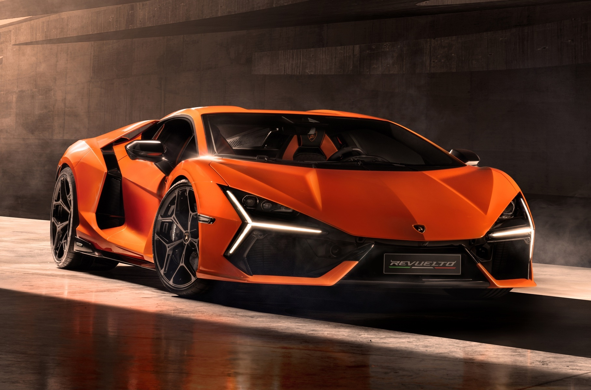
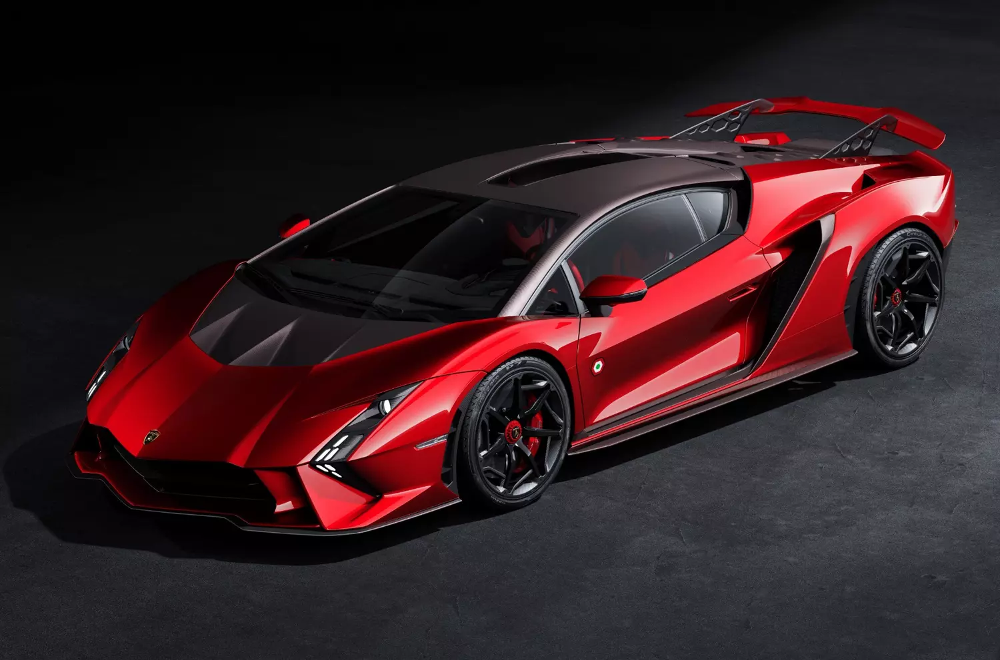
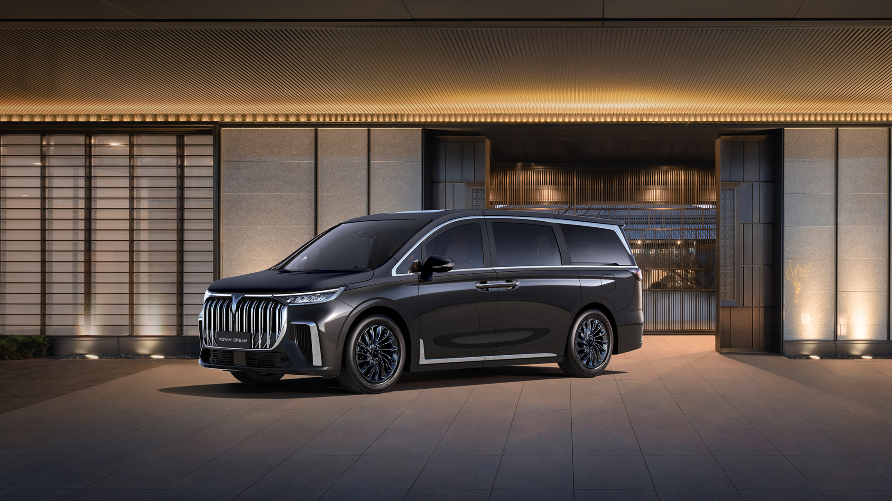
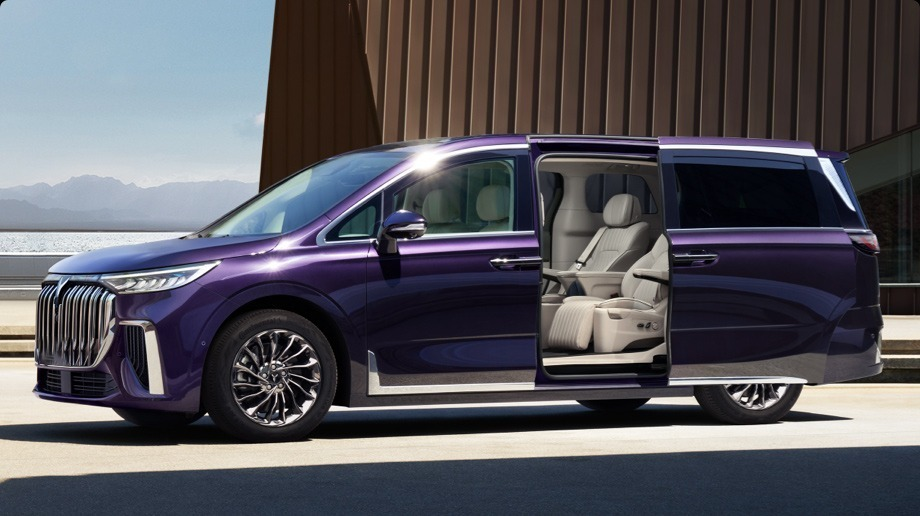
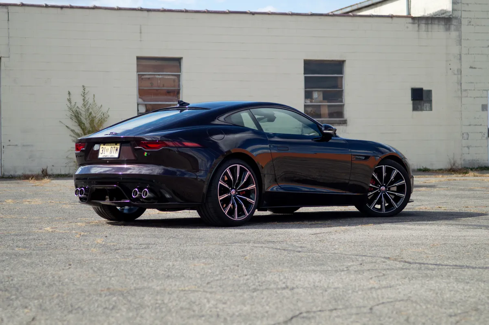
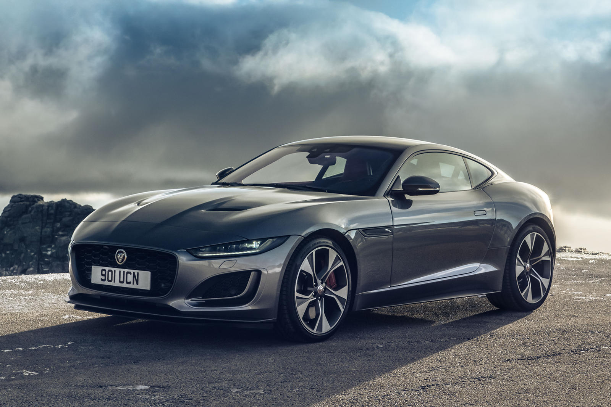

<html>
<head>
<title>Cars comparison</title>
<meta http-equiv="content-type" conten="text/html" charset="utf-8">

<!--Фон сайта-->
<style>
    body {
      background-color: rgb(248, 248, 233);
      background-repeat: repeat;
      background-size: cover;
    }
  </style>

        <!--Расположение текста по центру-->
 <style>
    .text-center {
       text-align: center;
       
     }
     </style>
<style>
    table { 
        border-collapse: collapse;
        width: 80 px;
    }
    </style>
    <style>
     th, td{
        border:1px solid black;
    }
</style>
</head>
</html>

<body>
    <h1 class="text-center">Сравнение Lamborgini, Voyah, Jaguar</h2>
    <p>В качетсве сравнения были выбраны модели автомобилей:
        <ul>
            <li>Lamborgini Aventador First Restyling 2023</li>
            <li>Voyah Dream 2023</li>
            <li>Jaguar F-Type Second Restyling 2023</li>
        </ul>
        <hr>
        <h2 class="text-center">Галерея</h2>
        <center>
         </center>
       <br><center>   </center>
       <br> <center>
       </center>
    </p>
    <!--Таблица сравнения-->
    <caption><b>Сравнение</b></caption>
    <table>
        <thead>
    <tr><th>Характеристика</th>
<th>Lamborgini Aventador First Restyling 2023</th>
       <th>Voyah Dream 2023</th> 
        <th>Jaguar F-Type Second Restyling 2023</th>
    </tr>
</thead>
<tbody>
    <tr> 
<td> Самая дорогая модель</td>
<td><mark>469 000$</mark></td>
<td>78 900$</td>
<td>93 000$</td>
    </tr>
<tr>
<td> Вид топлива</td>
<td>АИ-98</td>
<td>АИ-95 (гибрид)</td>
<td>АИ-95</td>
</tr>

<tr>
<td> Двигатель</td>
<td>Объём 6,5 литра</td>
<td>Объём 1,5 литра</td>
<td>Объём 3,0 литра</td>
</tr>
<tr>
<td> Расход топлива (средний) </td>
<td>19,6 литра</td>
<td>2 литра</td>
<td>8,9 литра</td>
</tr>
<tr>
<td> Скорость максимальная</td>
<td>350 км/ч</td>
<td>200 км/ч</td>
<td>275 км/ч</td>
</tr>
<tr>
<td> Мощность</td>
<td>770 л.с.</td>
<td>395 л.с.</td>
<td>380 л.с.</td>
</tr>
<tr>
<td> Полная масса</td>
<td>1575 кг</td>
<td>2540 кг</td>
<td>2150 кг</td>
</tr>
<tr>
<td> Крутящий момент</td>
<td>720 Н*м</td>
<td>610 Н*м</td>
<td>460 Н*м</td>
</tr>
<tr>
<td> Тип</td>
<td>Автомат</td>
<td>Гибрид</td>
<td>Автомат</td>
</tr>
<tr>
        <td> Привод</td>
        <td>Полный (4WD)</td>
        <td>Полный (4WD)</td>
        <td>Задний (FR)</td>
        </tr>

        <tr>
<td> Количество передач</td>
<td>7-ступенчатая коробка</td>
<td>8-ступенчатая коробка</td>
<td>7-ступенчатая коробка</td>
</tr>
</tbody>
        </table>
       <br> <details>
            <summary>Почему "Авентадор"?</summary>
            <p>
                Названием Авентадор автомобиль обязан корриде. В частности, наименование означает кличку бойцовского быка, который был популярен в 1993 году во время корриды в Сарагосе. данный бык даже получил награду за свою храбрость и бесстрашие.
            </p>
        </details>
        <br> <details>
            <summary>Что такое крутящий момент?</summary>
            <p>
                Простыми словами, крутящий момент- это работа двигателя, то самое воздействие энергии сгорающего топлива на коленчатый вал. Соответсвенно, мощность показывает, сколько раз за единицу времени совершился крутящий момент. Чем больше крутящий момент6 тем сильнее двигатель "толкает" машину вперед.
                </p>
        </details>
        <br> <details>
            <summary>Какой привод "стартует" быстрее?</summary>
            <p>
               Задний привод разгоняет автомобиль с места быстрее за счет смещения веса на ведущие задний колеса в момент старта. Главное, чтобы зацеп с покрытием был хороший, и тогда машинка встанет на дыбы. 
            </p>
        </details>
</body>